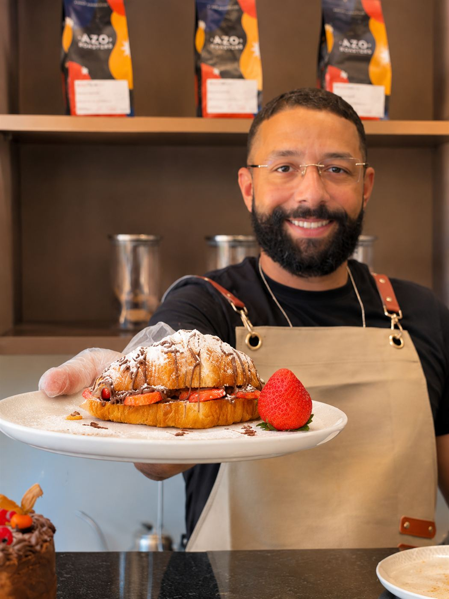
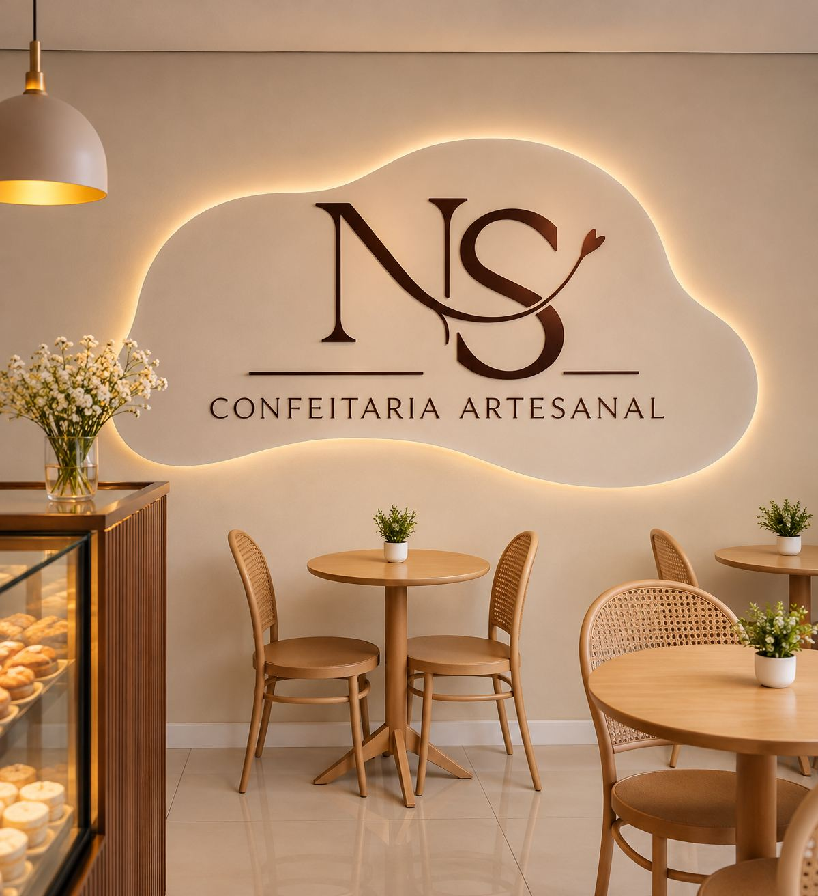
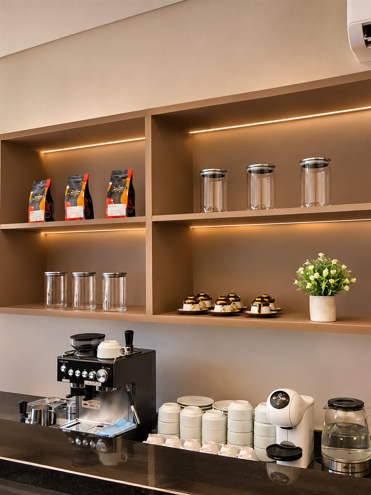
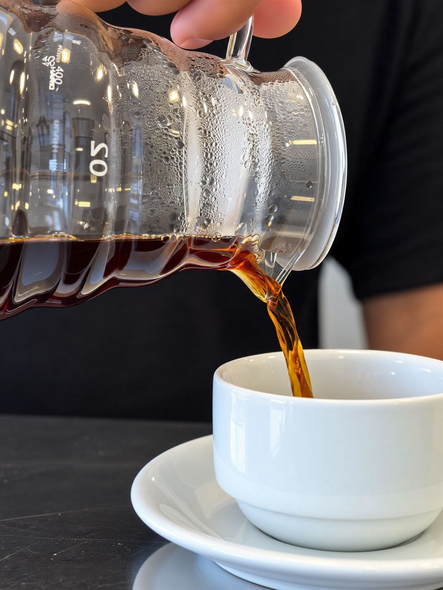
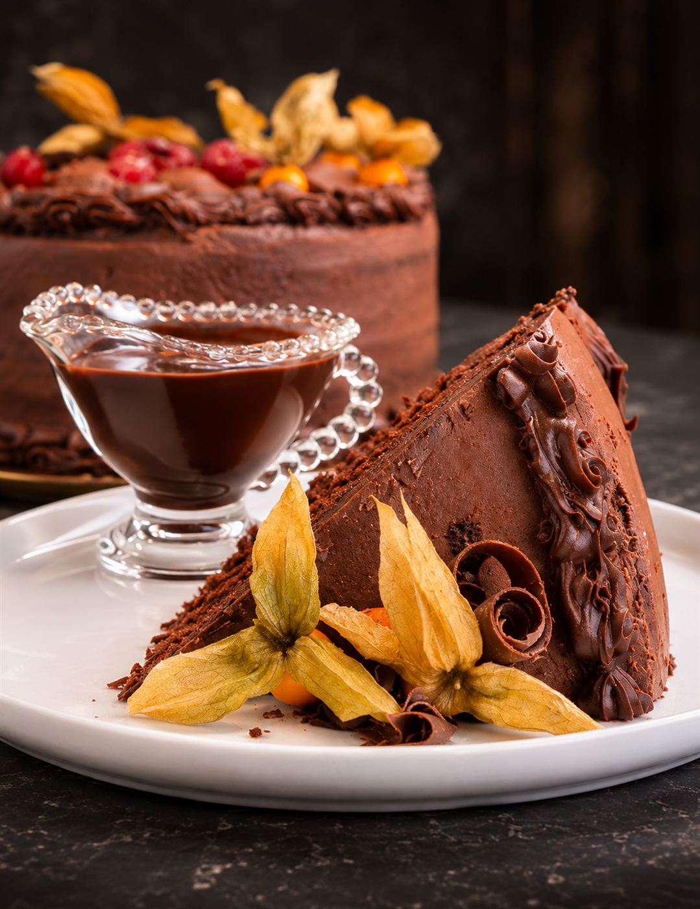

Nossa história
Uma história de união, feita com afeto
Como uma paixão pela cozinha virou a Neto & Silva, na Rota dos Milagres.
De onde viemos
A história da Neto & Silva nasceu de uma união de propósitos e da verdadeira paixão pela gastronomia. Neto começou fazendo bolos em 2018, um amor pela cozinha que se manteve vivo e cresceu durante a pandemia.
Depois de conhecer Patrício e de se casarem, os dois decidiram empreender juntos — primeiro no ramo de calçados. Foi numa viagem à Rota dos Milagres que o verdadeiro chamado surgiu: faltava ali um lugar acolhedor para desfrutar de boas sobremesas, salgados e cafés de qualidade.
Dessa percepção veio um novo capítulo, unindo a dedicação de Neto na confeitaria ao sonho do casal de ter um espaço próprio. O nome “Neto & Silva” carrega os sobrenomes dos fundadores e sela essa união, a parceria e o compromisso com cada cliente.
A cereja — símbolo de doçura, prazer e do toque especial que torna cada experiência memorável — é a nossa marca.


Linha do tempo
Nosso caminho até aqui
- 2018Neto começa a fazer bolos.
- PandemiaO amor pela cozinha se mantém vivo e cresce.
- A viagemNa Rota dos Milagres, o casal percebe a falta de um lugar acolhedor para sobremesas, salgados e cafés.
- 2026Nasce a Neto & Silva Confeitaria Artesanal.
Por que existimos
Transformar as pequenas pausas do dia em momentos de prazer e aconchego
Qualidade
Ingredientes de alto padrão para oferecer produtos saborosos, frescos e impecavelmente apresentados.
Acolhimento
Um atendimento atencioso e humano, para que cada cliente se sinta genuinamente bem-vindo e especial.
Cuidado e respeito
Atenção aos detalhes em todas as fases do serviço, com ética, cordialidade e valorização de cada pessoa.



Venha provar a nossa história
Ela fica ainda melhor acompanhada de um café.